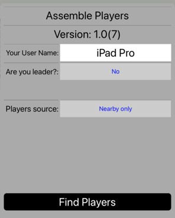

Help is organized as follows.
AnyCards provides a virtual table-top that is shared across devices. It also provides a virtual deck of cards which can be of a number of different sizes (but always made up of standard cards without jokers). It allows you to make boxes to hold stacks of cards.
The players use their separate devices to play a card game with the cards. Each player may optionally have a private hand. The game provides for an orderly succession of turns but does not otherwise build in the rules of any particular card game. It will support the playing of a wide variety of games that are played entirely with cards.
Achieving agreement about what game to play, enforcing its rules, or incorporating interactions such as bidding, may require voice or message contact between players (not provided by the game).
After installing and starting the game, touch the Players button to bring up a dialog that looks like the picture. 
The first time you do this, Your User Name will be whatever name you gave to your device (usually not too meaningful to others). Touch the white text box to bring up the keyboard and replace the name with a name that you want to be known by when playing. A group of players that wants to play together should be sure to choose distinctive names.
Exactly one player in the group of players must be the leader. That player will actually set up the game (deal out the cards, do whatever else is required). The leader also sets the number of players that are expected. Touch the blue text to the right of the Are you leader? label to toggle back and forth between being the leader and not. Notice that the Number of players stepper appears and disappears accordingly, as does the Game Setup button at the top of the app window (not shown in the picture).
Decide who in your group will be the leader and let that player set the number of players.
There are two ways for players to find each other (the Player source), called Nearby only and Entire internet. One of these modes is shown in blue. Touching the blue text toggles between the two modes. All players must select the same mode.
In the Nearby only mode, players must be near each other (within bluetooth range or on the same wifi hub). All such players are assumed to be playing with each other. Once all players have set the Nearby only mode, a single player has assumed the leader role and set the number of players, all players can touch the Find Players button to move on to the game setup phase.
When you switch to Entire Internet mode, the players can be anywhere, as long as they each have an internet connection. Some additional fields and buttons will appear. At least the Token field must be filled in. Every player must fill in the same value. Once this is true, all players can touch Find Players and move on to the game setup phase.
You will also have an opportunity to enter your own nickname for the token. This text is not transmitted and other players don't have to choose the same nickname or any nickname at all. This optional field is provided to aid the process of remembering and retrieving tokens.
Since it takes some effort for a group to come up with a token and for all players to enter it, AnyCards provides the ability to remember tokens (and their associated nicknames).
At the top of this help text is a link for reporting problems. Touching it will bring up an initialized email sending view with the recipient set to the AnyCards reporting address and some instructions in the body of the message (which you should delete and replace with your specific problem report).
You can use this capabiity to send any kind of commentary or input that you like, but a key purpose is to support reporting bugs and other problems that you are having with the app. To this end, the email, by default, contains up to two (often just one) logs of recent activity. When you are reporting a serious problem, such as a crash or misbehavior of some sort, it is a good idea to leave these logs in place since they help in diagnosing problems. They include only information about recent sequences of actions inside the app itself and do not include any personal information. However, if you feel more comfortable removing these logs you are free to do so.